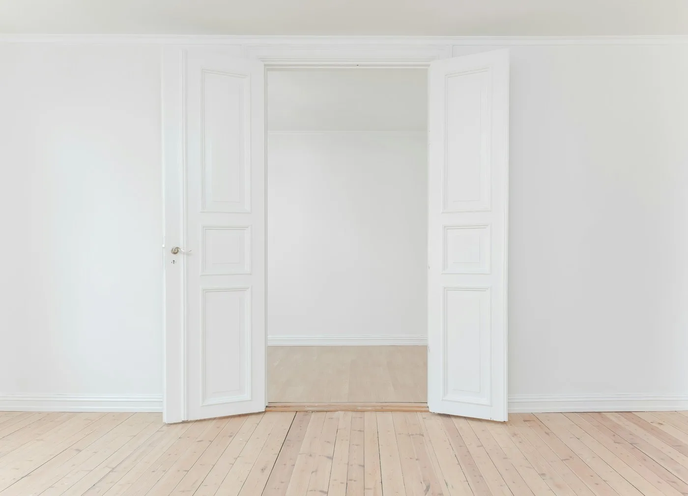

Why the space between a signal and a decision is where software earns its keep.
Most tools stop at information. The useful ones carry context all the way to the moment somebody has to choose.
Read the essayPerspectives on product thinking, operational clarity, and the human side of building software for teams. Long enough to be useful, short enough to finish.
Most tools stop at information. The useful ones carry context all the way to the moment somebody has to choose.
Read the essay
Product decisions get better when the reasoning is written down where other people can push on it. This journal is our version of that practice — arguments made carefully, revised in the open, and left up even when they turn out to be wrong.
There is no editorial calendar chasing news. Pieces appear when there is something worth saying, and they stay short when the idea is small.
Fragmentation rarely shows up as a single dramatic failure. It shows up as a slow draw on attention — the quiet cost of reconstructing a situation before you can act on it.
Teams rarely describe their problem as "context is scattered." They describe it as constant catching up: the same conversation happening in three channels, the decision that only lives in someone's memory, the document that exists in a version nobody is sure is current.
This essay traces how that cost accumulates and why the fix is less about adding a tool and more about deciding where context is allowed to live.
Read the full essayEvery piece in the journal sits somewhere within these themes. They are not categories so much as recurring questions.
How interfaces shape judgement, why defaults matter more than features, and what makes a tool feel trustworthy.
The distance between a documented process and the one that actually runs, and how to close it.
Collaboration, attention, ownership, and the parts of work that resist being reduced to a ticket.
Typography, motion, wording, and the small decisions that make a product feel considered.
Essays, notes, and short observations, in the order they were written.

Capability gets the attention. Comprehension is what actually changes what a team does next.
Read the piece
When people keep a spreadsheet alongside the platform, that spreadsheet is telling you something.
Read the piece
Adoption is usually a design problem long before it becomes a training problem.
Read the pieceSome ideas need room. These are the essays that took longer to write and, we hope, take a little longer to read — arguments followed all the way through rather than summarised early.
What a workspace has to carry for a choice to be made well.
Why more numbers rarely produce better judgement.
Designing for the Tuesday afternoon when novelty has worn off.
Flows that can be explained by the people they affect.
Not every idea deserves an essay. These are fragments — a paragraph, sometimes two — that were worth keeping.
Rather than organise the journal by date alone, a few pieces belong to ongoing columns — each one following a single question across many months.
How operating models drift, and what it takes to notice before the drift becomes the norm.
Follow the columnShort pieces on the details that decide whether a product feels considered or assembled.
Follow the column
Collaboration observed from inside real workflows rather than from a framework diagram.
Follow the columnNot everything ages well. These are the ones we still stand behind.
The journal is where we think out loud. The platform is where that thinking becomes something a team can actually use.